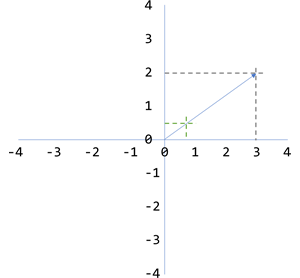
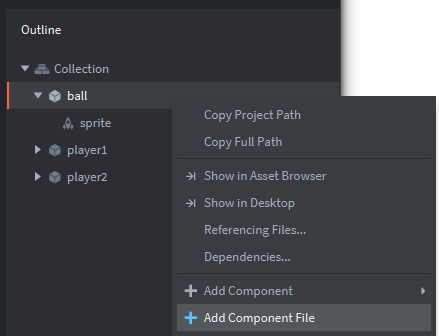

Tutorials for 2D games projects
Pong | Creating the script for moving the ball.
- In the assets panel, right click the folder 'main' and choose 'New...', 'Script'. Name the script, 'ball'.
- Add code to the init function to spawn the ball.
function init(self)
-- set the random number seed and discard the first value
math.randomseed(os.time())
math.random()
-- store the original position of the ball so we can reset it after a goal
self.respawn_position = go.get_position()
-- spawn the ball
self.speed = 500
spawn_ball(self)
endRandom numbers in computer systems are deterministic sequences generated from a number called a seed. To ensure we get a different set of random numbers every time we run the game, we use the randomseed function. The seed we give it wil be the time as a 10 digit number. os.time returns this value.
Random number generation is a very interesting topic worth reading about. It creates a range of problems. One problem in Lua's implementation is the random function returning the same first number in a sequence. Therefore we discard the first number by calling the random function once before actually using it to return values we do want. If you omit this step the ball will always start travelling in the same direction even though you thought you'd set it to be random!
The function get_position returns the x, y, and z position of a game object. Note that although we named our object 'ball', in code we still refer to is as 'go' (game object). We want to remember where our object spawned so we can reset it to this position after a goal is scored. We keep this in an attribute called respawn_position. Note that this attribute needs the three values: x, y and z. However, a variable can only store one value at a time. The attribute is actually an array of these three values. These special arrays are called vector3's in Defold.
The speed we want the ball to be moving at is set to 500. We use a variable here so that we could change it later if we wanted to. Perhaps every time the paddle hits the ball.
We then want to call a user-defined function to spawn the ball.
The ball needs to be spawned at the start of the game and also every time a goal is scored. We could duplicate the code in these two places in our script, but it would make more sense to create a reusable program component so that we have only one copy of code to spawn the ball. Generally in programming, if you find yourself repeating sections of code you probably need either a loop or a function instead to make a more maintainable, shorter and scalable program.
- Create a new function called spawn_ball underneath the init function.
function spawn_ball(self)
go.set_position(self.respawn_position)
-- set an initial random direction of travel using a vector
local x = math.random(1,3)
local y = math.random(1,3)
local x_direction = math.random(1,2)
local y_direction = math.random(1,2)
if x_direction == 1 then
x = -x
end
if y_direction == 1 then
y = -y
end
self.direction = vmath.normalize(vmath.vector3(x,y, 0))
endSince this code will be used every time we want to spawn the ball we set the position of the ball to be the respawn position. The first time the game is run the ball is already at this position, but it's not an issue.
A random number is used to assign two local variables for the ball's next x and y position. 1 to 3 ensures a small range of values relative to the current position. We avoid the value zero which would result in the ball standing still.
We want to randomise whether the ball is going to travel left or right, up or down when it spawns to make the game a little fairer. To do this we generate a random number between 1 and 2 and swap the direction if it is a 1.
x = -x is a really neat way of turning a positive number negative, or a negative number positive and we'll use this again later to make the ball bounce.
Assuming the random number generator resulted in x being 3 and y being 2, we can see how this is a vector from the current ball position.

However, we really want this to be a number between 0 and 1 so that we can multiply it by a speed variable later. Therefore we normalise the vector to result in x being 0.83 and y being 0.55. That's the same trajectory as you can see illustrated. This new vector is stored in an attribute called direction.
Vectors are used a lot in games programming to determine the motion paths of objects.
- Add code to the update function to move the ball every frame.
function update(self, dt)
-- move the ball in it's current direction at a speed in pixels per second
local pos = go.get_position()
pos = pos + self.direction * self.speed * dt
go.set_position(pos)
endget_position returns the x, y and z position of the ball into a vector3 called pos. We add the direction vector to the current position, multiplying by the speed.
Remember we need to use delta time (dt) to ensure a consistent experience between the different speeds of CPUs and graphics cards.
Finally we set the new x and y position of the ball using set_position, passing it our vector.
- Now we need to attach the script to the ball object. In the assets panel, in the 'main' folder, double click 'main.collection'.
- In the outline panel, right click ball and choose, 'Add Component File'. Choose the /main/ball script.

- Save the changes by pressing CTRL-S or 'File', 'Save All'.
- Run the code at this point. If it is working, the ball should move and then disappear off-screen.

We haven't written any code to handle colliding with the edge of the screen or a paddle yet. Returning to the paddle script. Stage 6a >
If your code doesn't work and the ball doesn't move, consider the following potential issues:
- Did you put the code into the correct function?
We changed init and update, not final. - Do you have just one init and update function in your script? Did you leave the boilerplate code in there too!
- Did you add the script to the ball game object as a new component file?
The script must be attached to the game object to work. - Are you still running a previous version of the game without reloading?
Check the windows you have open.
 Craig'n'Dave | Version 1.3
Craig'n'Dave | Version 1.3